A sole that feels the floor, and a camera that learns from it
A humanoid robot with pressure and shear sensors under its feet can tell what it is standing on, but only after it has stepped. These pages ask whether that sense of touch can teach the robot's camera to recognise the floor before the step.
The answer in four numbers
Scores run from 0 to 1, where 1 is every step right. With two floor types, guessing gives 0.5.
Where to start
Start with these
The two summaries tell the whole story. Everything below is the detail behind them.
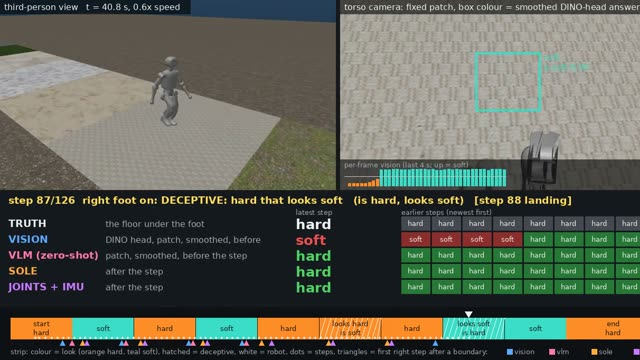
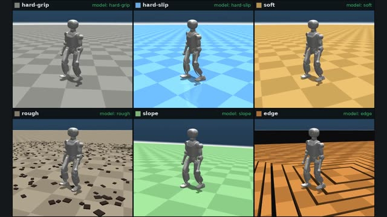
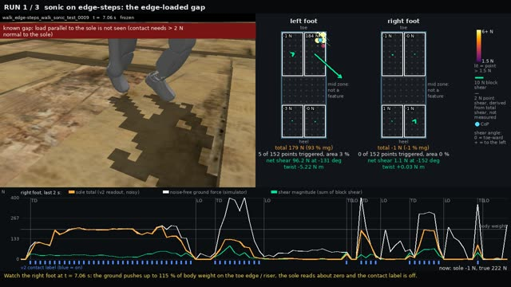
Experiment 2: one patch of floor, hard or soft
The narrow experiment. A camera on the torso looks at one fixed patch of floor ahead of the feet and says hard or soft on every frame.
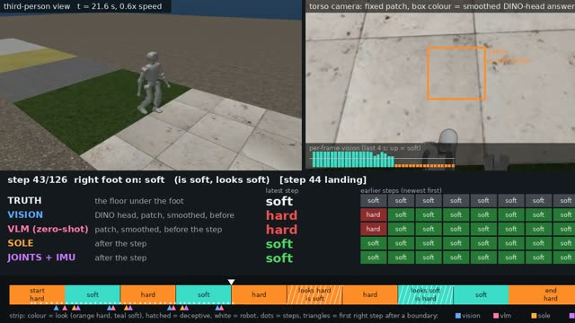
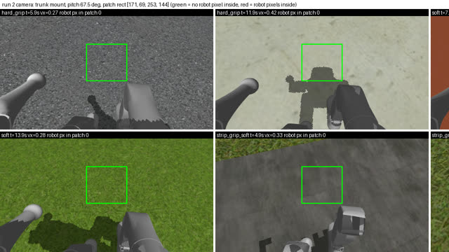
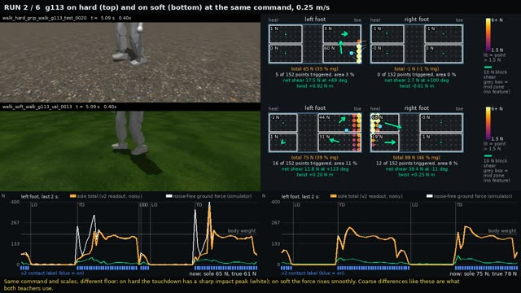
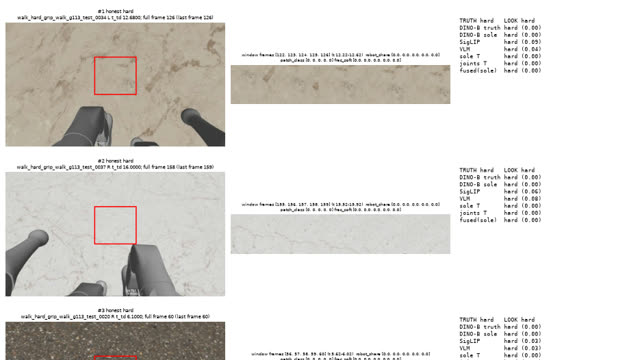
Experiment 1: six floor types, three gaits
The broad experiment. Six kinds of floor, three ways of walking, and an image crop around the spot where the foot will land.
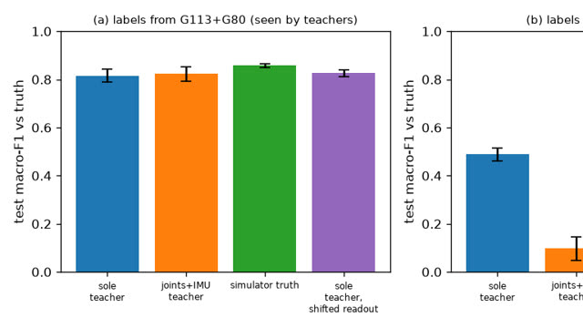
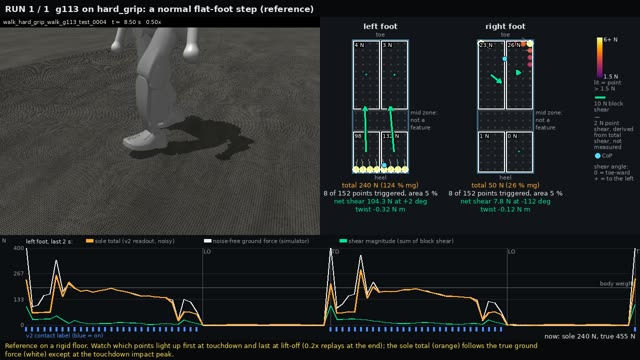
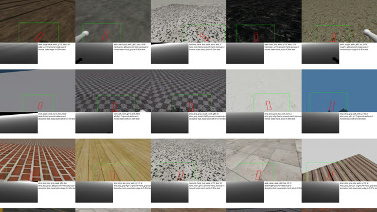
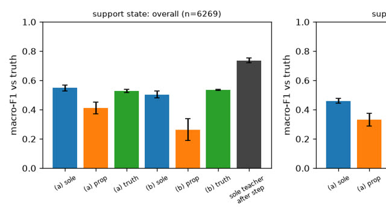
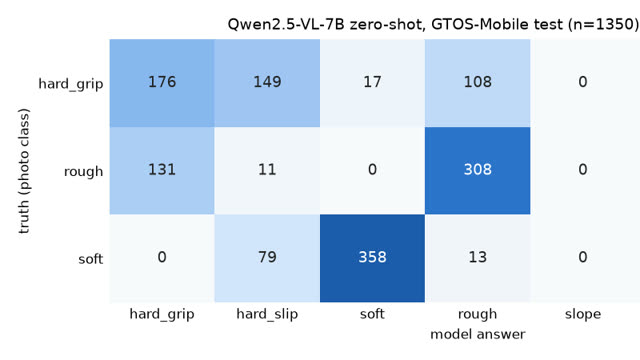
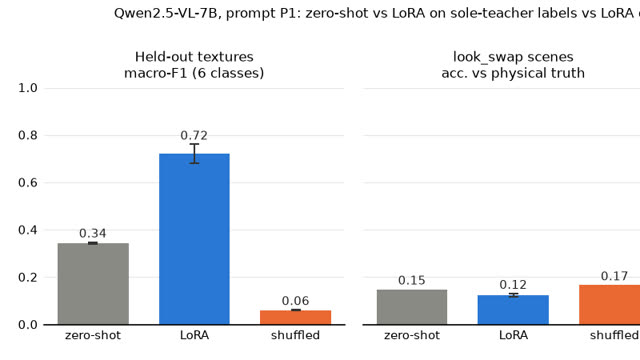

Walking
Two attempts to change how the robot walks. Neither reached its goal.
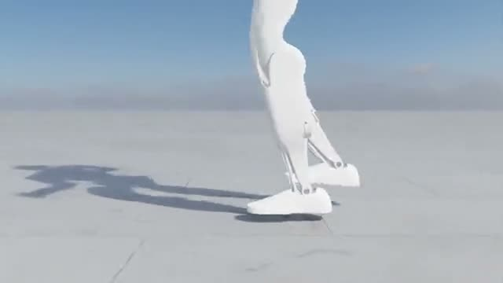
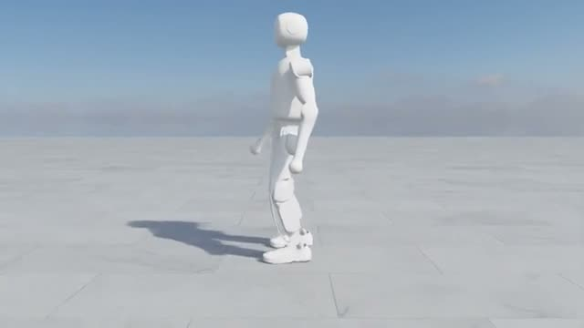
Step 1 in full
The complete reports behind the first summary.
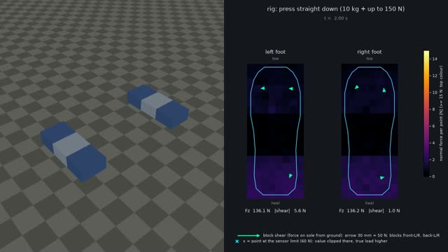
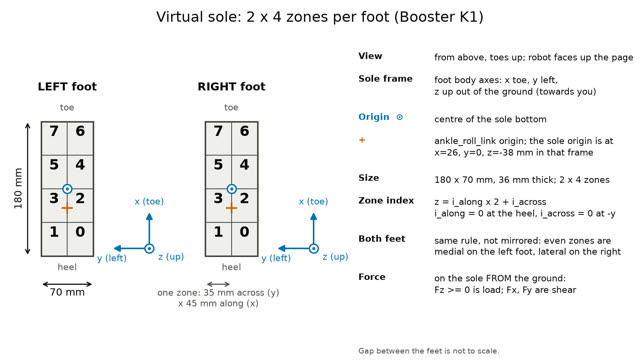
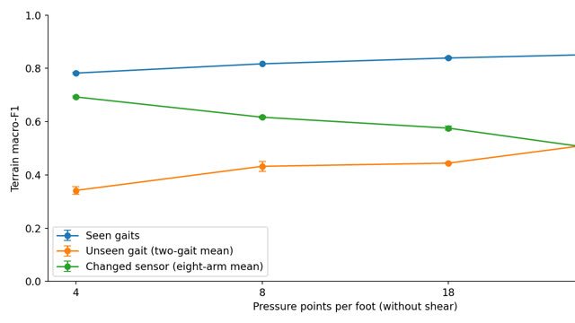
Words used on these pages
- The sole
- A sensor under each foot. In simulation it reads pressure at 19 by 8 points and shear, the sideways force, as four arrows per foot.
- Coarse features
- A small summary of the sole: four pressure blocks, four shear arrows, where the centre of pressure is, the total force and how much of the sole touches.
- Teacher
- A classifier that labels each step after it happened, from the sole or from the joints. Its labels are then used to train the camera model.
- Joints + IMU
- What every robot already has: joint angles and speeds, and the body's tilt and acceleration.
- ViT
- A vision transformer, here DINOv3. It turns an image patch into numbers; a small trained "head" turns those into hard or soft.
- VLM
- A vision-language model, here Qwen2.5-VL with 7 billion parameters. It is shown the image and asked for the floor type in words.
- Zero-shot
- Using a model as it comes, with no training on this data.
- LoRA
- A cheap way to fine-tune a large model by training a small add-on.
- Deceptive floor
- A floor that looks like one type and behaves like another, such as a hard floor with a carpet texture.
- Held-out textures
- Floor pictures never used in training. All scores are on these.
- Gait
- A way of walking. G113 and G80 step with a flat foot; SONIC walks heel to toe, like a person.
- Macro-F1
- The score used throughout. It averages over the floor types so that a common type cannot hide a missed rare one.
- Holds / holds with caveats
- The verdict of an independent re-check that recomputed each claim from the saved predictions.